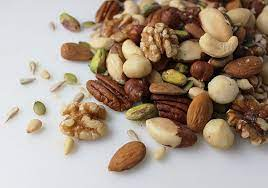

Healthy Lifestyle and Mental Health Blogs
 Nuts and Seeds: Tiny But Mighty
According to research, eating nuts and seeds is associated with a lower risk of developing high blood pressure, heart disease, cancer, and other conditions. To understand why, it helps to consider what nuts and seeds are: the genesis of other plants
Sweet Stuff: Striking a Balance with Sugar
Sugar gets a bad rap—often rightly so—because we eat too much of it in the form of added sugars. Added sugars are sugars added during the processing of foods, foods packaged as sweeteners (such as table sugar), sugars from syrups and honey, and sugars from concentrated fruit or vegetable juices. The table below highlights the many other ways you may see sugar described on food labels.
Kindness and Your Health
According to a study published in The BMJ, the peer-reviewed journal of the British Medical Association, volunteering ties in with a 24% reduction in early death, which is comparable to eating four to six servings of fruits and vegetables every day.
Life’s Essential 8: Steps to Better Heart Health
The American Heart Association (AHA) has long recognized that health is a broader, more positive proposition than merely the absence of disease. One of the AHA’s goals is shifting people’s perspective and behavior—from a focus solely on disease treatment to a more holistic approach that helps all of us understand how to avoid heart disease while also enabling positive heart health and a longer and healthier life.
Cooking 101: 6 Ways to Build Confidence in the Kitchen
If you’ve never really cooked before, it’s easy to be intimidated in the kitchen. You might envision your grandmother’s specialties or the mouthwatering food photography on Instagram and think, “I can’t possibly make that at home!” Or maybe you’ve pledged to simply eat healthier or spend less money on eating out or delivery, and you don’t know where to start.
 10 Common Cooking Challenges, Solved!
10 Common Cooking Challenges, Solved!
“I’m just no good at cooking!” Far too many home cooks have thrown up their hands and uttered those words. Sure, little questions or struggles are bound to pop up when you’re in the kitchen. But that doesn’t mean wonderful home-cooked meals are out of reach. Like anything in life, finding your cooking comfort zone takes practice and a little patience. Some pro tips couldn’t hurt either! For this, we tapped two of our chefs: Tim Zintz, Director of Culinary, and Jason Lewis, Culinary Development Chef. Dig in as they offer their advice for handling some of the most common kitchen woes.
8 Ways to Simplify Your Life
The saying “less is more” sounds great, but what does it really mean? Our souls seem to long for less clutter in our lives, fewer obligations, and less stress. But how can you even begin to seek less in a world full of more? “In Western society, our self-worth tends to be tied to how much we have and how much we have accomplished,” observes Yarvell Randolph Gardner, a Licensed Professional Counselor (LPC) with a master’s degree in Human Service Counseling (MHS). “But this isn’t the same as happiness, nor is it necessarily best for our emotional wellbeing
Your Go-To Gardening Guide
Homegrown produce and herbs are incomparably delicious—and nutritious. There’s nothing like a freshly picked tomato combined with fragrant basil right from your back yard. Yet too many of us believe we don’t have the time, space or skill to manage a garden. If you feel like you just don’t have a “green thumb,” you’re not alone!
7 Tips for Better Work-Life Balance
We’re all juggling a lot these days. (How’s that for an understatement?) When your house can double as your office, not to mention the occasional classroom and personal gym, it’s easy to feel pulled in many competing directions. When the lines between your work and personal life are blurred, both can suffer, potentially leading to burnout. Work-life balance has become the ultimate buzz phrase and, while it is often touted as the solution, it’s easier said than done. And it looks different for everyone.